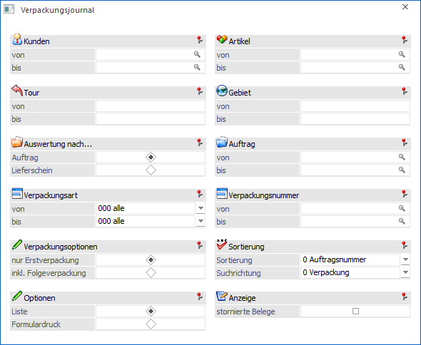
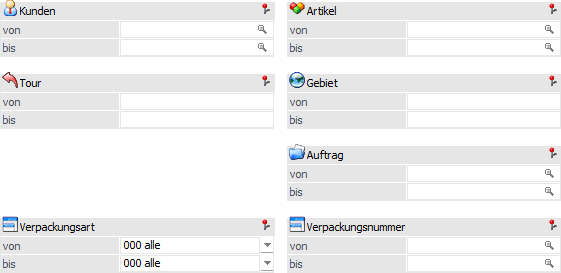
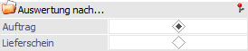
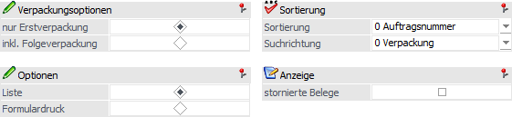
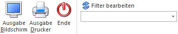

Mittels Verpackungsjournal kann man nachverfolgen, in welcher Verpackung ein bestimmter Artikel eines Auftrags verpackt wurde. Zu finden ist diese Auswertung unter…
1 WinLine FAKT
1 Auswertungen
1 Verpackung
1 Verpackungsjournal

Folgende Selektionen und Einstellungen stehen zur Verfügung:
Selektion

Die Ausgabe des Verpackungsjournals kann gemäß den folgenden Kriterien eingegrenzt werden:
ü Kunden
ü Artikel
ü Tour
ü Gebiet
ü Auftrag / Lieferschein (je nach "Auswertung nach…")
ü Verpackungsart
ü Verpackungsnummer
Einstellungen


Ø Auswertung nach…
Wenn zu einem Auftrag mehrere Lieferscheine erzeugt wurden, erfolgt die Gruppierung je gewählter Option.
ü Auftrag
Bei einer Auswertung
"nach Auftrag" werden alle Aufträge, welche kommissionierte Mengen enthalten,
angeführt. Hier steht die Selektion der Auftragsnummer zur Verfügung.
ü Lieferschein
Bei der Auswertung
"nach Lieferschein" werden Aufträge ohne Lieferschein nicht berücksichtigt. Bei
der Selektion kann nach der Lieferscheinnummer eingegrenzt werden.
Ø Verpackungsoptionen
Mit Hilfe dieser Option kann definiert werden, ob nur die Erstverpackung oder auch die ggfs. vorhandenen Folgeverpackungen ausgegeben werden sollen.
Ø Optionen
Als Ausgabeoptionen kann zwischen "Liste" und "Formulardruck" unterschieden werden:
ü Liste
Bei der Listenausgabe
wird das Verpackungsjournal (Kommissionierungsprotokoll) ausgegeben.
ü Formulardruck
Bei dem
Formulardruck können die Verpackungsformulare (Etiketten) erneut gedruckt
werden. Hierfür wird das, in der Verpackungsart hinterlegte Formular
herangezogen. In diesem Fall ist die Ausgabe nur auf Drucker möglich.
Ø Sortierung
Zur Sortierung der Auswertung stehen folgende Möglichkeiten zur Auswahl:
ü 0 - Auftragsnummer
ü 1 - Kundennummer
ü 2 - Tour
ü 3 - Lieferadresse
ü 4 - Lieferscheinnummer
Ø Suchrichtung
An dieser Stelle kann definiert werden, wie die auszuwertenden Daten betrachtet werden sollen.
ü 0 - Verpackung
Bei der
Suchrichtung "Verpackung" wird angezeigt, welche Artikel in den Verpackungen
enthalten sind. Hierbei werden die Folgeverpackungen (bei Aktivierung der Option
"Verpackungsoptionen - inkl. Folgeverpackung") als erstes angezeigt.
ü 1- Artikelnummer
Bei der
Suchrichtung "Artikelnummer" wird angezeigt, in welchen Verpackungen die
einzelnen Artikel geliefert wurden.
Ø stornierte Belege
Durch Aktivieren dieser Option werden auch stornierten Lieferscheine in der Auswertung berücksichtigt.
Buttons

Ø Ausgabe Bildschirm
Mit Hilfe des Buttons "Ausgabe Bildschirm" oder der Taste F5 wird die Auswertung am Bildschirm ausgegeben.
Ø Ausgabe Drucker
Durch Anwahl des Buttons "Ausgabe Drucker" wird die Auswertung am Drucker ausgegeben.
Ø Ende
Durch Anwahl des Buttons "Ende" bzw. der Taste ESC wird die Auswertung geschlossen.
Ø Filter bearbeiten
Durch Anklicken des Buttons "Filter bearbeiten" kann die Auswertung nach frei definierbaren Kriterien eingeschränkt werden.